set.seed(33) # para reproduzir os resultados
plot(
rnorm(n = 500),
type = "l",
main = "Ruído branco Gaussiano",
xlab = "",
ylab = ""
)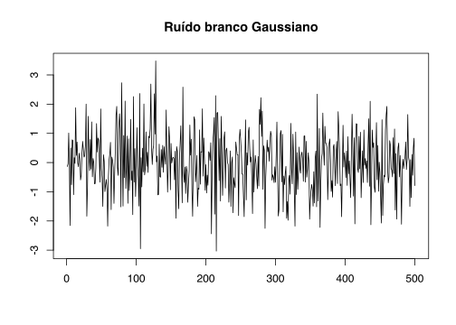
Vinicius Oike
March 11, 2019
Equações a diferenças estocásticas surgem naturalmente em modelos lineares de séries de tempo. Um modelo linear bastante simples para descrever uma série de tempo é o chamado random walk. Ele pode ser expresso como:
\[\begin{equation} y_{t} = y_{t-1} + \epsilon_{t} \end{equation}\]onde \(\epsilon_{t}\) é um ruído branco, isto é, \(\epsilon_{t}\) é um processo com média zero e sem autocorrelação. O modelo random-walk diz simplesmente que o valor de \(y(t)\) é igual a seu valor no período imediatamente anterior, \(y_{t-1}\), somado a um “choque aletório”. Uma aplicação famosa deste modelo é na teoria de consumo do economista Robert Hall (1943-). Uma de suas hípóteses, em Hall (1988), é de que o consumo segue a seguinte equação
\[\begin{equation} c_{t}^{-1/\sigma} = \gamma c_{t-1}^{-1/\sigma} + \epsilon_{t} \end{equation}\]onde \(c_{t}\) é o consumo em \(t\), \(1/\sigma\) é o parâmetro que mede o coeficiente de elasticidade de substituição (vem da forma CES de utilidade) e \(\epsilon_{t}\) é um termo de ruído. As estimativas encontram um valor muito próximo de 1 para \(\gamma\) para diferentes valores de \(\gamma\).
Nossa análise de equações diferenciais estocásticas tem como foco a análise da estabilidade. Em linhas gerais, queremos descobrir se as soluções para determinada equação convergem ou divergem (explodem). O estudo de equações a diferenças guarda várias similaridades com as equações diferenciais. Então, ainda que o conhecimento prévio de equações diferenciais não seja necessário, uma familiaridade prévia com equações diferenciais pode auxiliar no entendimento de alguns conceitos das equações a diferenças.
Vamos analisar em detalhes o comportamento de equações de 1ª e 2ª ordens e depois generalizar para os casos de ordens mais elevadas.
Uma equação a diferenças de 1ª ordem tem a forma geral: \[\begin{equation} \label{eq:1ord} y_{t} = a_{0} + a_{1}y_{t-1} \end{equation}\] Podemos resolver esta equação por recursão, isto é, encontrando \(y_{t-1}\), substituindo na equação acima, depois encontrando \(y_{t-2}\), substituindo novamente até chegarmos em \(y_{0}\). \[\begin{align*} y_{t} & = a_{0} + a_{1}y_{t-1} \\ y_{t} & = a_{0} + a_{1}(a_{0} + a_{1}y_{t-2}) = a_{0}(1 + a_{1}) + a_{1}^{2}y_{t-2}\\ y_{t} & = a_{0}(1 + a_{1}) + a_{1}^{2}(a_{0} + a_{1}y_{t-3}) = a_{0}(1 + a_{1} + a_{1}^{2}) + a_{1}^{3}y_{t-3} \\ \vdots & \\ y_{t} & = a_{0}(1 + a_{1} + a_{1}^{2} + \dots + a_{1}^{t-1}) + a_{1}^{t}y_{t-t}\\ & = a_{0}\sum_{i = 0}^{t-1}(a_{1})^{i} + a_1^{t}y_{0} \end{align*}\] Podemos acrescentar um termo aleatório (de ruído) na equação acima para torná-la estocástica. Talvez o exemplo mais simples de processo estocástico seja o ruído branco. Formalmente, uma sequência de variáveis aleatórias \(\{ w_{t}\} = w_{1}, w_{2}, \dots, w_{T}\) segue um processo de ruído branco se a esperança de \(w_{t}\) for zero e a autocovariância entre quaisquer tempos distintos for zero (e igual a \(\sigma^{2}\) entre tempos iguais), isto é,
\[\begin{aligned} \mathbb{E}(w_{t}) & = 0, \quad \forall t \\ \mathbb{E}(w_{t}w_{s}) & = 0 , \quad \forall s\neq t \\ \mathbb{E}(w_{t}^{2}) & = \sigma^{2} , \quad \forall t \end{aligned}\]A notação usual é \(w_{t} \sim RB(0,\sigma^{2})\). Não é necessário, mas é bastante comum supor que \(w_{t}\sim N(0,1)\), isto é, que \(w_{t}\) segue uma distribuição normal padrão (alguns livros sequer fazem a distinção entre um e outro). Note que, por exemplo, supor que o ruído segue uma distribuição uniforme também seria admissível.
Para gerar uma série de ruído branco gaussiano no R podemos usar a função rnorm() que sorteia valores aleatórios a partir de uma distribuição normal. Lembre-se que se for informado somente o tamanho da sequência \(n\) a função assume que a distribuição desejada é a normal-padrão (média zero e variância unitária). A ideia é que o ruído branco é uma sequência sem padrão discernível.
set.seed(33) # para reproduzir os resultados
plot(
rnorm(n = 500),
type = "l",
main = "Ruído branco Gaussiano",
xlab = "",
ylab = ""
)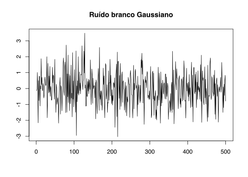
Considere agora a equação a difereneças estocásticas de 1ª ordem abaixo em que \(w_{t}\) é ruído branco.
\[\begin{equation} \label{eq:1ord_sto} y_{t} = a_{0} + a_{1}y_{t-1} + w_{t} \end{equation}\]Novamente, podemos resolver esta equação por substituição recursiva: \[\begin{align*} y_{t} & = a_{0} + a_{1}y_{t-1} + w_{t}\\ y_{t} & = a_{0} + a_{1}(a_{0} + a_{1}y_{t-2} + w_{t-1}) + w_{t} = a_{0}(1 + a_{1}) + a_{1}^{2}y_{t-2} + a_{1}w_{t-1} + w_{t}\\ y_{t} & = a_{0}(1 + a_{1} + a_{1}^{2}) + a_{1}^{3}y_{t-3} + a_{1}^{2}w_{t-2} + a_{1}w_{t-1} + w_{t}\\ \vdots & \\ y_{t} & = a_{0}(1 + a_{1} + a_{1}^{2} + \dots + a_{1}^{t-1}) + a_{1}^{t}y_{t-t} + a_{1}^{t-1}\epsilon_{1} + a_{1}^{t-2}\epsilon_{2} + \dots + a_{1}^{0}\epsilon_{t}\\ & = a_{0}\sum_{i = 0}^{t-1}(a_{1})^{i} + a_1^{t}y_{0} + \sum_{i = 0}^{t-1}a_{1}^{i}\epsilon_{t-i} \end{align*}\] Note que quando \(t \to \infty\) a estabilidade da solução depende da magnitude de \(a_{1}\). Em particular, se \(a_{1}\) for maior do que um em módulo a série não converge. Isto pode ser visto de várias maneiras. Talvez a mais simples seja notar que: \[\begin{equation} \lim_{t \to \infty} \sum_{i = 0}^{t - 1}a_{1}^{i} = 1 + a_{1} + (a_{1})^{2} + (a_{1})^{3} + \dots + (a_{1})^{n} + \dots \end{equation}\] Se \(a_{1} > 1\) os termos entre parênteses vão crescendo sem fim e a soma não converge para nenhum valor finito. Da mesma forma se \(a_{1} < -1\) os valores entre parênteses vão crescendo sem limite, ainda que eles oscilem entre negativos e positivos. Logo, teremos estabilidade somente se \(|a_{1}| < 1\).
Outra maneira de visualizar este resultado é usando o operador defasagem (lag). Seja o operador defasagem definido como \(\mathbb{L}x_{t} = x_{t-1}\). Lembre-se que o operador defasagem tem a seguinte propriedade: \(\mathbb{L}c = c\) se \(c\) for uma constante. Além disso, vamos usar um resultado de somas geométricas infinitas; como muitas demonstrações em séries de tempo usam este resultado vale a pena revisá-lo. Considere a soma infinita abaixo \[1 + \frac{1}{2} + \frac{1}{4} + \frac{1}{8} + \dots\] Queremos descobrir se esta soma converge para algum valor e, idealmente, queremos também saber qual valor é este. Tome primeiro a soma finita: \[\begin{equation} s = a + ar + ar^2 + ar^3 + \dots + ar^{n-1} = \sum_{i = 0}^{n - 1}ar^{i} \end{equation}\] onde \(r \neq 1\). Multiplicando os dois lados desta igualdade por \((1 - r)\) temos: \[\begin{align*} s(1-r) & = (a + ar + ar^2 + ar^3 + \dots + ar^{n-1})(1-r)\\ & = (a + ar + ar^2 + ar^3 + \dots + ar^{n-1} - ar - ar^2 - ar^3 - ar^4 - \dots - ar^{n}) \\ & = a - ar^{n} \\ & = a(1 - r^{n}) \end{align*}\] Rearranjando esta expressão chegamos no seguinte resultado \[\begin{equation} s = \sum_{i = 0}^{n - 1}ar^{i} = a\frac{1 - r^{n}}{1 - r} \end{equation}\] Tomando o limite desta expressão para \(n \to \infty\) chegamos em \[\begin{equation} a + ar + ar^2 + ar^3 + \dots = a\sum_{i = 0}^{\infty}r^{i} = \frac{1}{1 - r} \end{equation}\] onde agora impomos \(|r| < 1\). Para o caso particular em que \(a = 1\) e \(r = 1/2\) temos que \[1 + \frac{1}{2} + \frac{1}{4} + \frac{1}{8} + \dots = \frac{1}{1 - 1/2} = 2\]
Seja a equação a diferença estocástica de 1ª ordem: \(x_{t} = a_{0} + a_{1}x_{t-1} + w_{t}\), onde \(w_{t} \sim \text{RB}(0, \sigma^{2})\). Então podemos encontrar a solução para esta equação usando o operador defasagem.
\[\begin{align} x_{t} & = a_{1}\mathbb{L}x_{t} + a_{0} + w_{t} \\ x_{t}(1 - a_{1}\mathbb{L}) & = a_{0} + w_{t} \\ x_{t} & = \frac{a_{0}}{1 - a_{1}\mathbb{L}} + \frac{w_{t}}{1 - a_{1}\mathbb{L}} \\ x_{t} & = a_{0}\sum_{i = 0}^{\infty}(a_{1}\mathbb{L})^{i} + \sum_{i = 0}^{\infty}(a_{1}\mathbb{L})^{i}w_{t} \\ x_{t} & = \frac{a_{0}}{1 - a_{1}} + w_{t} + a_{1}w_{t-1} + a_{1}^{2}w_{t-2} + \dots \\ x_{t} & = \frac{a_{0}}{1 - a_{1}} + \sum^{\infty}_{i = 0}(a_{1})^{i}w_{t-i} \end{align}\]Se \(|a_{1}|<1\) sabemos que as somas infinitas existem e são finitas. Abaixo há dois exemplos deste caso, um em que \(a_{1} = -.6\) e outro em que \(a_{1} = .8\). Note como o coeficiente negativo na primeira equação resulta num gráfico com mais oscilações. Para simular a série precisamos impor, arbitrariamente, alguma condição inicial, i.e., um valor para \(y_{0}\). Para um valor grande de \(t\) a escolha não carrega grandes consequências; ainda assim, o correto seria simular a série com a condição inicial e depois descartar algumas das primeiras observações. Nos exemplos abaixo simulo \(300\) observações para cada série e depois descarto as primeiras \(100\) para limpar o efeito da escolha de valor inicial \(y_{0} = 2\).
Para nossas finalidades isto não impacta os resultados então nos exemplos futuros vou ignorar esta correção.
y <- c(); y[1] <- 2 # cria o vetor y com a condição inicial y0 = 2
z <- c(); z[1] <- 2 # cria o vetor z com a condição inicial z0 = 2
for(i in 1:299) { # monta a série yt
y[i+1] = 5 - .6 * y[i] + rnorm(1)
}
for(i in 1:299) { # monta a série zt
z[i+1] = 1 + .8 * z[i] + rnorm(1)
}
#> Descarta as primeiras 100 observações para limpar o efeito da escolha
#> de y0 = z0 = 2
y <- y[101:300]
z <- z[101:300]
plot.ts(y, xlab = "", ylab = "", main = bquote(y[t] == 5 ~ -.6*y[t-1] + w[t]))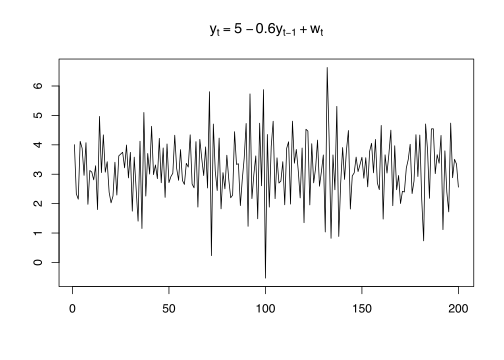
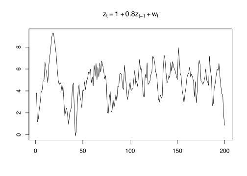
Quando \(|a_{1}|>1\) a trajetória seria explosiva, isto é, não vai convergir. Abaixo segue um exemplo deste caso. Note como mesmo com \(a_{1}\) pequeno o processo cresce muito rapidamente. A linha tracejada em azul indica a mesma equação sem o termo estocástico \(w_{t}\).
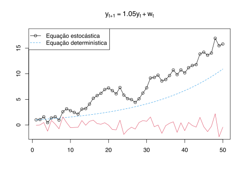
Note que o exemplo acima é literalmente uma possível realização do processo. Como o termo \(w_{t}\) é estocástico, ele pode assumir valores diferentes quando formos “calcular” novamente a trajetória da equação acima. Abaixo segue um gráfico com 100 possíveis trajetórias - note o comportamento divergente das trajetórias.
# Cria uma matriz 50x100 com 1 em todas as entradas (cada série é uma coluna)
X <- matrix(1, nrow = 50, ncol = 100)
# Loop para substituir os valores da matriz
for (j in 1:100) { # para cada coluna j
for (i in 1:49) { # para cada linha i
#> Substitui o valor da linha i + 1 da coluna j por 1.05 vezes
#> o valor da linha anterior e soma um choque
X[i + 1, j] <- 1.05 * X[i, j] + rnorm(1)
}
}
ts.plot(X,
col = rainbow(100),
ylab = "",
main = bquote("100 realizações do processo" ~ y[t] == 1.05~y[t-1]+w[t]))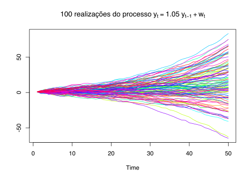
Podemos repetir o mesmo exercício para um caso estável. Uma forma de pensar na estabilidade é de que é possível encobrir todas as observações entre duas linhas.
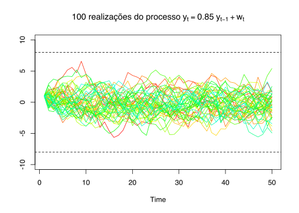
Quando \(a_{1} = 1\) temos o importante - já mencionado - caso do random walk. Usando o mesmo raciocínio recursivo acima podemos mostrar que este processo é instável. Seja \(y_{t}\) definido como: \[\begin{equation} y_{t} = a_{0} + y_{t-1} + w_{t} \end{equation}\] Esta expressão também é chamada de random walk com tendência. Então temos que:
\[\begin{align} y_{t} & = y_{t-1} + a_{0} + w_{t}\\ y_{t} & = y_{t-2} + a_{0} + w_{t-1} + a_{0} + w_{t}\\ y_{t} & = y_{t-2} + 2 a_{0} + w_{t-1} + w_{t}\\ & \ldots \\ y_{t} & = y_{0} + t a_{0} + w_{t} + w_{t-1} + w_{t-2} + \ldots + w_{0}\\ y_{t} & = y_{0} + a_{0}t + \sum^{t}_{i = 0} w_{t-i} \end{align}\]Note que o termo \(a_{0}t\) é uma função linear do tempo; por este motivo, ele dá a tendência do processo.
Omitindo o termo constante \(a_{0}\) vemos que a cada período a série é acrescida de um choque, isto é, \(y_{t} - y_{t-1} = w_{t}\). De fato, o random walk pode ser expresso como um somatório destes vários choques aleatórios: \[\begin{equation} y_{t} = \sum^{t}_{i = 0} w_{t-i} \end{equation}\]
Novamente, o limite para \(t \to \infty\) não converge. Abaixo segue uma simulação de um random walk com condição inicial \(y_{0} = 0\). Ploto o processo com e sem tendência. A linha tracejada é a tendência \(a_{0}t\).
w = rnorm(200); x = cumsum(w)
yd = .2 + w; y = cumsum(yd)
plot.ts(
y,
main = bquote("Random Walk, " ~ y[t] == 0.2 + y[t-1] + w[t]),
col = 4,
xlab = "",
ylab = "")
lines(x, col = 2)
abline(h = 0)
abline(a = 0, b = .2, lty = 2, col = 4)
legend(
"topleft",
legend = c("Com tendência", "Sem tendência"),
col = c(4,2),
lty = 1
)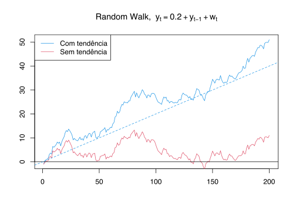
Quando \(a = -1\) temos um processo oscilatório. Note como o aumento da variância do termo de ruído altera a série - o processo determinístico fica, cada vez mais, obscurecido.
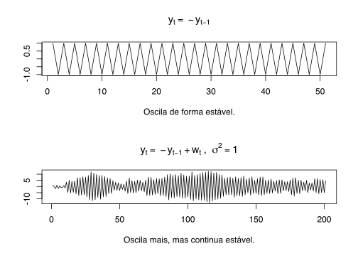
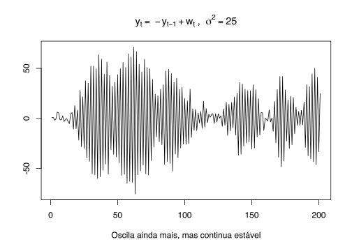
Uma equação a diferenças de 2ª ordem tem a forma geral: \[\begin{equation} \label{eq:2nd} y_{t} = a_{0} + a_{1}y_{t-1} + a_{2}y_{t-2} \end{equation}\] Para encontrar as soluções da equação acima, vamos primeiro buscar as soluções da equação homogênea. Reescrevemos: \[\begin{equation} y_{t} - a_{1}y_{t-1} - a_{2}y_{t-2} = 0 \end{equation}\] E agora chutamos a solução da forma \(y_{t} = A\alpha^{t}\). Assim, \[\begin{align} A\alpha^{t} - a_{1}A\alpha^{t-1} - a_{2}A\alpha^{t-2} & = 0 \\ A\alpha^{t-2}(\alpha^{2} - a_{1}\alpha - a_{2}) & = 0 \end{align}\] Supondo que \(A \neq 0\) temos que a equação acima será satisfeita se a expressão entre parênteses for igual a zero. Note que isto é simplesmente um polinômio de segunda ordem em \(\alpha\), isto é \(P(\alpha) = \alpha^{2} - a_{1}\alpha - a_{2}\) cujas raízes \(\alpha_{1}\) e \(\alpha_{2}\) são dadas pela equação quadrática: \[\begin{equation} \alpha_{1} \text{, } \alpha_{2} = \frac{a_{1} \pm \sqrt{a_{1}^2 + 4a_{2}}}{2} \end{equation}\] A solução geral de \(\eqref{eq:2nd}\) incorpora todas as combinações lineares das raízes: \[\begin{equation} y_{t}^{h} = A_{1}(\alpha_{1})^{t} + A_{2}(\alpha_{2})^{t} \end{equation}\] Onde \(A_{1}\) e \(A_{2}\) são constantes arbitrárias que podem ser determinadas usando as condições inicias do problema. Como sabemos, há três casos possíveis para as raízes de \(P(\alpha)\):
Intuitivamente, já podemos antecipar alguns resultados. Note que se tomarmos o limite, com \(t \to \infty\), da solução geral precisamos que as raízes \(\alpha_{1}\) e \(\alpha_{2}\) sejam menores que \(1\) em módulo. Usualmente, refere-se à essa condição como a do círculo unitário, isto é, de que as raízes do polinômio caracterísitico estejam dentro do círculo unitário. Isto porque podemos plotar estas raízes num plano cartesiano como pontos dentro de um círculo com raio igual a um.
Lembre-se que uma raíz complexa é um par conjugado da forma \(z = a \pm bi\) onde \(i\) é o número imaginário definido como \(i = \sqrt{-1}\). Além disso, podemos definir a distância de um ponto a outro usando a norma euclideana, isto é, \(\left \| z \right \| = \sqrt{a^2 + (bi)^2}\).
Se tomarmos a norma de \(\alpha\) como \(a^2 + (bi)^2 = a^2 - b^2\)
Tome a equação a diferenças de 2ª ordem: \[\begin{equation} \label{eq:caso1}
y_{t} = 0.2y_{t-1} + 0.35y_{t-2}
\end{equation}\] A forma homogênea é: \[\begin{equation}
\alpha^{2} - 0.2\alpha - 0.35
\end{equation}\] Para encontrar as raízes deste polinômio podemos usar a função polyroot do R. Ela leva como argumento os coeficientes do polinômio em ordem ‘crescente’, isto é, dado um polinômio da forma \(P(x) = c_{0} + c_{1}x + c_{2}x^{2} + \dots + c_{n}x^{n}\), informamos os coeficientes na ordem \(c_{0}, c_{1}, \dots, c_{n}\).
Ou seja, as soluções são da forma: \[\begin{equation}\label{eq:caso1sol} y_{t} = A_{1}(0.7)^{t} + A_{2}(-0.5)^{t} \end{equation}\] A equação acima define uma família de soluções parametrizada por \(A_{1}\) e \(A_{2}\), isto é, temos diferentes soluções para diferentes valores de \(A_{1}\) e \(A_{2}\). Estas constantes arbitrárias podem ser resolvidas usando as condições iniciais do problema, mas, em geral, nosso interesse está em interpretar a estabilidade da solução. Note que como ambas as raízes são menores do que \(1\) em módulo, todas as soluções possíveis devem convergir para zero.
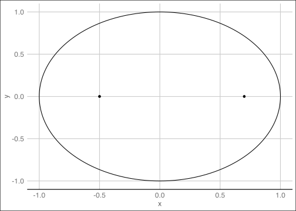
Podemos visualizar a equação \(\eqref{eq:caso1}\) com auxílio de um loop no R. Para isto vamos ter de impor, arbitrariamente, alguma condição inicial para o problema. Aqui escolho \(y_{0} = 0\) e \(y_{1} = 1\)
y <- c(); y[1] <- 0; y[2] <- 1
a0 <- 0; a1 <- 0.2; a2 <- 0.35
for(t in 1:30){
y[t+2] = a0 + a1*y[t+1] + a2*y[t]
}
plot.ts(y, main = bquote(y[t] == ~ 0.2*y[t-1] + 0.35*y[t-2]),
ylab = "", xlab = "Converge para zero")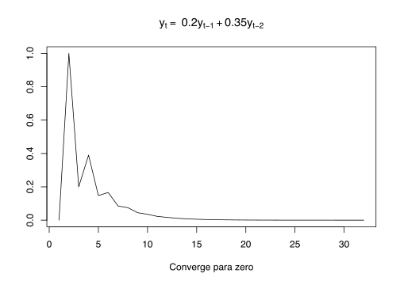
Temos mais dois subcasos a analisar, a ver: quando uma das raízes é maior do que um (em módulo) e quando as duas raízes são maiores do que um (em módulo). Podemos já antecipar que estas soluções serão instáveis.
Se qualquer uma das raízes for maior do que um, as trajetórias serão instáveis. Abaixo seguem 100 realizações segundo a equação \[y_{t+2} = .5y_{t+1} + 1.05y_{t} + w_{t}\]
As raízes desta equação são \(r_{1} = -1\) e \(r_{2} = 1.05\). Como uma delas é maior do que um, as trajetórias serão instáveis. Este último gráfico usa o pacote ggplot2 para uma melhor visualização.
X <- matrix(1, nrow = 20, ncol = 100)
for (j in 1:100) {
for (i in 1:18) {
X[i+2, j] = .5 * X[i+1,j] + 1.05 * X[i, j] + rnorm(1)
}
}
library(ggplot2)
library(reshape2)
library(ggthemes)
dados <- as.data.frame(X)
ano <- 1:20
dados <- cbind(ano, dados)
dados <- melt(dados, id.vars = "ano")
ggplot(dados, aes(ano, value)) +
geom_line(aes(colour = variable), alpha = .5) +
guides(colour = FALSE) +
theme_gdocs() +
labs(
x = "Duas raízes reais distintas (r1 = 1.05 e r2 = -1). \nComo uma das raízes é maior do que um, as trajetórias são instáveis.",
y = ""
)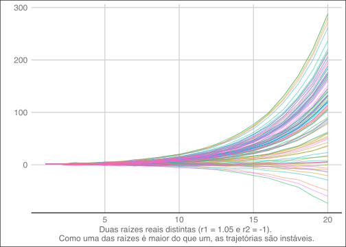
Pela notação acima, como \(\alpha_{1} = \alpha_{2} = \alpha\) temos que \(\alpha = \frac{a_{1}}{2}\)
\[ y_{t} = A_{1}(\alpha)^{t} + tA_{2}(\alpha)^{t} \]
Novamente, a condição de estabilidade exige que \(| \alpha | < 1\), ou, neste caso específico, que \(| \frac{a_{1}}{2} | < 1\), isto é, que \(|a_{1}|<2\). Considere o caso abaixo:
\[ y_{t} = y_{t-1}-\frac{1}{4}y_{t-2} \]
A equação da forma homogênea é então:
\[ \alpha^{2} - \alpha + 0.25 = 0 \]
Cujas raízes são \(\alpha = 0.5\) como se pode verificar abaixo
Ou seja, temos uma solução geral da forma:
\[ y_{t} = A_{1}0.5^{t} + A_{2}t0.5^{t} \]
Usando as condições iniciais pode-se determinar os valores precisos de \(A_{1}\) e \(A_{2}\). Supondo, por exemplo, que \(y_{0} = 1\) e \(y_{1} = 0\) podemos determinar os valores de \(A_{1} = 1\) e \(A_{2} = -1\) . Note, contudo, que o valor destas constantes não é importante para analisar o comportamento de convergência.
### raizes iguais
y <- c(); y[1] = 1; y[2] = 0
for (t in 3:20) {
y[t] = (0.5)^(t) - t * (0.5)^(t)
}
plot.ts(
y,
xlab = "Raiz repetida menor que um em módulo. Estável",
ylab = ""
)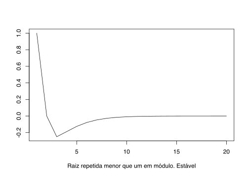
Se tivermos uma raiz unitária ela será dupla. Este é o caso em a equação homogêna tem a forma \((x + 1)^{2}\) ou \((x - 1)^{2}\). No primeiro caso, a equação a diferenças seria:
\[ y_{t} = - 2y_{t-1}-y_{t-2} \]
Olhando para o gráfico da solução geral vemos que ele não converge.
### raizes iguais
y <- c(); y[1] = 1; y[2] = 0
for (t in 3:20) {
y[t] = (1)^(t) - t * (1)^(t)
}
plot.ts(
y,
xlab = "Raiz repetida menor que um em módulo. Estável",
ylab = ""
)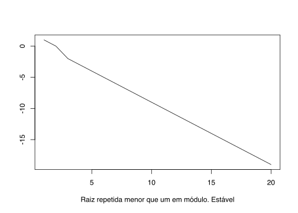
De fato, esta equação oscila entre valores positivos e negativos e vai divergindo.
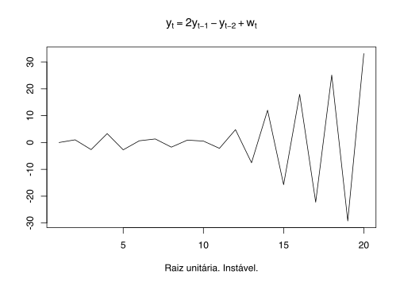
Quando há raízes complexas, analisamos a parte real destas para verificar a estabilidade. Da equação quadrática temos que \[ \alpha_{1} \text{, } \alpha_{2} = \frac{a_{1} \pm \sqrt{a_{1}^2 + 4a_{2}}}{2} \] Se temos raízes complexas, então \[ a_{1}^2 + 4a_{2} < 0 \]
Isto é, seja \(z = a \pm bi\) a forma das raízes. Então o valor de a indica a estabilidade do processo. Novamente, caso \(|a|<1\) o processo será estável, e, caso contrário, o processo será instável.
\[ y_{t} = 1.6y_{t - 1} - 1.64 y_{t - 2} + w_{t} \]
O polinômio característico da equação acima:
\[ P(z) = 1 - 1.6z + 1.64z^2 \]
As raízes deste polinômio são \(\alpha_{1} = 0.4878049+0.6097561i\) e \(\alpha_{2} = 0.4878049-0.6097561i\). A norma de cada raiz (a distância entre o ponto e a origem) é \[ \|\alpha\| = \sqrt{0.4878049^{2} + (0.6097561)^2} = 0.6097561 \]
[1] 0.4878049+0.6097561i 0.4878049-0.6097561i[1] 0.6097561 0.6097561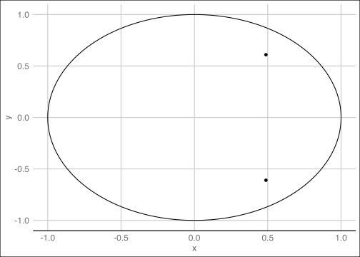
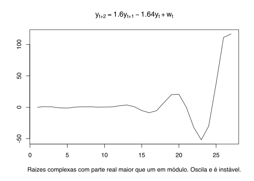
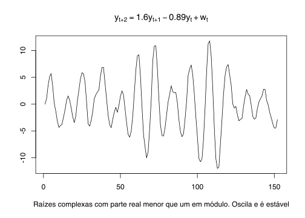
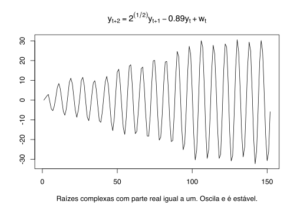
Novamente, podemos ver a condição de estabilidade no círculo unitário. Plotamos a parte real no eixo-x e a parte imaginária no eixo-y
Um processo AR(p) é, essencialmente, uma equação a diferenças. Para o caso específico do AR(2)
\[ y_{t} = \phi_{1}y_{t-1} + \phi_{2}y_{t-2} + \epsilon_{t} \]
onde \(\epsilon_{t}\) é um ruído branco gaussiano, isto é \(\epsilon_{t} \sim N(0,\sigma^{2})\). Usando operador defagem podemos ver que:
\[\begin{align} y_{t} = \phi_{1}y_{t-1} + \phi_{2}y_{t-2} + \epsilon_{t}\\ & = \phi_{1}Ly_{t} + \phi_{2}L^{2}y_{t} + \epsilon_{t} \\ y_{t}(1 - \phi_{1}L - \phi_{2}L^{2}) & = \epsilon_{t} \end{align}\]O termo entre parêntesis é um “polinômio” em L. Analogamente ao caso determinístico anaisamos a estabilidade do AR(2) pelas raízes deste polinômio. Note, contudo, que como L é um operador - o operador defasagem - não podemos tratá-lo como um número. Então vamos trocá-lo por \(z\). \[ P(z) = 1 - \phi_{1}z - \phi_{2}z^{2} \] As raízes \(r_{1}\), \(r_{2}\) deste polinômio são:
\[ r_{1}\text{, }r_{2} = \frac{\phi_{1} \pm \sqrt{\phi_{1}^{2} + 4 \phi_{2}}}{2} \]
Note que esta expressão é a mesma que encontramos anteriormente. A condição de estabilidade continua a mesma: as raízes do polinômio característico devem estar dentro do círculo unitário. Da mesma forma, as condições que encontramos para os coeficientes \(a_{1}\) e \(a_{2}\) acima também valem para o AR(2). Repetindo elas aqui por conveniência, um AR(2) será estável se:
Note que aqui estabilidade é intercambiável com estacionaridade. Ainda que as condições que definem estacionaridade sejam diferentes, elas são equivalentes a garantir que as raízes do polinômio característico estejam dentro do círculo unitário.
\[ y_{t} = 0.3 y_{t-1} + 0.65 y_{t-2} + \epsilon_{t} \]
Call:
arima(x = y, order = c(2, 0, 0))
Coefficients:
ar1 ar2 intercept
0.2883 0.6345 0.9528
s.e. 0.0542 0.0544 0.8808
sigma^2 estimated as 1.095: log likelihood = -293.86, aic = 595.72
Training set error measures:
ME RMSE MAE MPE MAPE MASE
Training set 0.008318959 1.0464 0.8579949 34.99348 118.0388 0.7439671
ACF1
Training set -0.00874765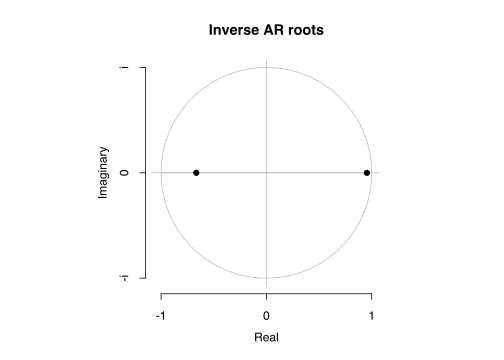
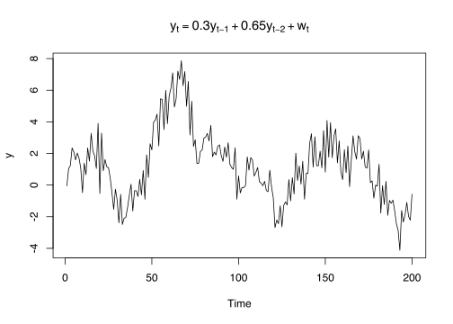
Lembre-se também que não é necessário fazer este tipo de análise para modelos MA(q), pois eles sempre são estacionários. Para verificar isto é mais simples considerar o caso em que \(q = 1\).
\[ y_{t} = \epsilon_{t} + \theta\epsilon_{t - 1} \]
A esperança desta expressão:
\[ \mathbb{E}(y_{t}) = \mathbb{E}(\epsilon_{t} + \theta\epsilon_{t - 1}) = \mathbb{E}(\epsilon_{t}) + \theta\mathbb{E}(\epsilon_{t - 1}) = 0 \]
A autocovariância:
\[\begin{align} \mathbb{E}(y_{t}^2) & = \mathbb{E}\left { (\epsilon_{t} + \theta\epsilon_{t - 1})^2 \right } \\ & = \mathbb{E}\left { \epsilon_{t}^2 + \theta^2\epsilon_{t - 1}^2 + \theta\epsilon_{t}\epsilon_{t - 1} \right } \\ & = \mathbb{E}(\epsilon_{t}^2) + \theta^{2}\mathbb{E}(\epsilon_{t - 1}^2) + \theta\mathbb{E}(\epsilon_{t}\epsilon_{t - 1}) \\ & = \sigma^{2} + \theta^{2} \sigma^{2} \\ & = \sigma^{2}(1 + \theta^{2}) \end{align}\] \[\begin{align} \gamma(1) & = \mathbb{E}(y_{t}y_{t-1}) \\ & = \mathbb{E}\left { (\epsilon_{t} + \theta\epsilon_{t - 1})(\epsilon_{t - 1} + \theta\epsilon_{t - 2}) \right } \\ & = \mathbb{E}\left { \epsilon_{t}\epsilon_{t - 1} + \theta\epsilon_{t}\epsilon_{t - 2} + \theta\epsilon_{t - 1}^2 + \theta^{2}\epsilon_{t - 1}\epsilon_{t - 2} \right } \\ & = \theta \sigma^{2} \end{align}\]Note que as demais autocovariâncias serão todas iguais a zero. Isto se generaliza para o caso genérico de um MA(q). Todas as autocovariâncias de ordem maior do que \(q\) serão iguais a zero.
\[ y_{t} = \epsilon_{t} + \theta_{1}\epsilon_{t - 1} + \theta_{2}\epsilon_{t - 2} + \dots + \theta_{q}\epsilon_{t - q} \]
Onde \(\epsilon_{t} \sim RB(0, \sigma^{2})\). A esperança será independente do tempo pois,
\[\begin{align} \mathbb{E}(y_{t}) & = \mathbb{E}(\epsilon_{t} + \theta_{1}\epsilon_{t - 1} + \theta_{2}\epsilon_{t - 2} + \dots + \theta_{q}\epsilon_{t - q})\\ & = \mathbb{E}(\epsilon_{t}) + \theta_{1}\mathbb{E}(\epsilon_{t-1}) + \theta_{2}\mathbb{E}(\epsilon_{t-2}) + \dots + \theta_{q}\mathbb{E}(\epsilon_{t-q}) \\ & = 0 \end{align}\]A autocovariância também só depende da distância.
\[\begin{align} \mathbb{E}(y_{t}^{2}) & = \mathbb{E}\left \{ (\epsilon_{t} + \theta_{1}\epsilon_{t - 1} + \theta_{2}\epsilon_{t - 2} + \dots + \theta_{q}\epsilon_{t - q})^2\right \} \\ & = \mathbb{E}\left \{ \epsilon_{t}^2 + (\theta_{1}\epsilon_{t - 1})^2 + (\theta_{2}\epsilon_{t - 2})^2 + \dots + (\theta_{q}\epsilon_{t - q})^2 + \dots)\right \} \\ & = \sigma^{2} + \theta_{1}^{2}\sigma^{2} + \theta_{2}^{2}\sigma^{2} + \dots + \theta_{q}^{2}\sigma^{2} \\ & = \sigma^{2} (1 + \theta_{1}^{2} + \theta_{2}^{2} + \dots + \theta_{q}^{2}) \end{align}\] \[\begin{align} \mathbb{E}(y_{t}y_{t - k}) & = \mathbb{E}\left \{ (\epsilon_{t} + \theta_{1}\epsilon_{t - 1} + \theta_{2}\epsilon_{t - 2} + \dots + \theta_{q}\epsilon_{t - q}) (\epsilon_{t - k} + \theta_{1}\epsilon_{t - k - 1} + \theta_{2}\epsilon_{t - k - 2} + \dots + \theta_{q}\epsilon_{t - k - q})\right \} \\ & = \mathbb{E} ( \theta_{k}\epsilon_{t - k}^2 + \theta_{1}\theta_{k + 1}\epsilon_{t - 1}^2 + \theta_{2}\theta_{k - 2}\epsilon_{t - 2}^2 + \dots + \theta_{q - k}\theta_{q}\epsilon_{t - q})^2 \\ & = \theta_{k}\sigma^{2} + \theta_{1}\theta_{k - 1}\sigma^{2} + \theta_{2}\theta_{k - 2}\sigma^{2} + \dots + \theta_{q}\theta_{k - q}\sigma^{2} \\ & = \sigma^{2} (1 + \theta_{1}^{2} + \theta_{2}^{2} + \dots + \theta_{q}^{2}) \end{align}\]Contudo é preciso verificar a condição de invertibilidade. Tome o caso mais simples do MA(1) sem constante. Usando o operador defasagem podemos ver que:
\[\begin{align} y_{t} & = \epsilon_{t} + \theta\epsilon_{t - 1} \\ y_{t} & = \epsilon_{t} + \theta L\epsilon_{t} \\ y_{t} & = \epsilon_{t} \\ \frac{y_{t}}{1 + \theta L} & = \epsilon_{t} \\ \end{align}\]Agora vemos que \[\begin{align} \epsilon_{t} & = \frac{y_{t}}{(1 - (-\theta L)} \\ & = y_{t} + (-\theta L)y_{t} + (-\theta L)^2y_{t} + (-\theta L)^3y_{t} + \dots \\ & = y_{t} -\theta y_{t-1} + \theta^2y_{t-2} -\theta^3y_{t-3} + \dots \\ & = \sum_{i = 0}^{\infty} (-\theta)^{i}y_{t - i} \end{align}\]
Novamente, a condição para que a soma infinita acima convergente é que \(| \theta | < 1\).